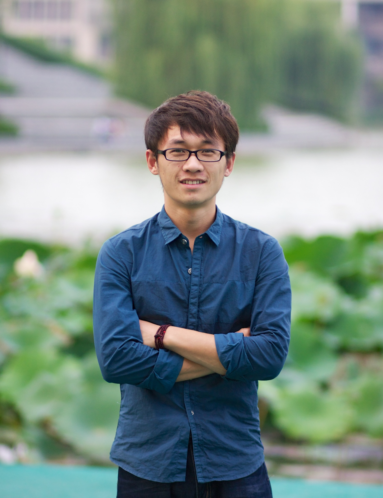

Guoqing (Robin) Wang
PhD candidateSchool of Computer Science and Engineering
University of New South Wales
UNSW Sydney,
NSW 2052 Australia
Phone: (+61) 411-527-363
Email: wangguoqingcumt@hotmail.com
Short Bio
I am currently a PhD candidate at the School of Computer Science and Engineering, University of New South Wales Sydney, Australia. My supervisors are Dr. Changming Sun and Prof. Arcot Sowmya. My research is supported by scholarships from UNSW and CSIRO Data61.
My ultimate goal is to design advanced learning algorihtms that are able to abstract knowledge from images/videos/languages, and use the learned knowledge to solve both high-level (e.g., classification, generation, semantic segmentation, visual reasoning etc.) and low-level (e.g., image restoration, depth/3D estimation from a single 2D image etc.) downstream computer vision tasks. In paritcular, the algorithms should be data-efficient and resource-efficient, and should be able to generalize the learned knolwedge to solve problems with images/videos from different domains and in the wild (instead of synthetic and controlled enviroment).
Machine Learning
self-/semi-/un- supervised learning and few-shot learning, domain adaptation, meta learning, network interpretation and optimization, multi-task learning.Computer Vision
holistic image/video understanding (classification, generation, restoration, and structure perception), adversarial attack, neural architecture search, network compression, efficient network routing.
Recent News
- [Nov 2019] Four papers are under review by CVPR2020 and IJCV.
- [Jun 2019] I am awarded ICCV'19 Student Travel Award.
- [Mar 2019] One paper is accepted by ICCV'19 as poster.
- [Feb 2019] Two papers are accepted by IEEE Transactions on Information Forensics and Security (TIFS).
See More
- [Jun 2019] I am invited as reviewer for IEEE T-PAMI and IJCV.
Organizations